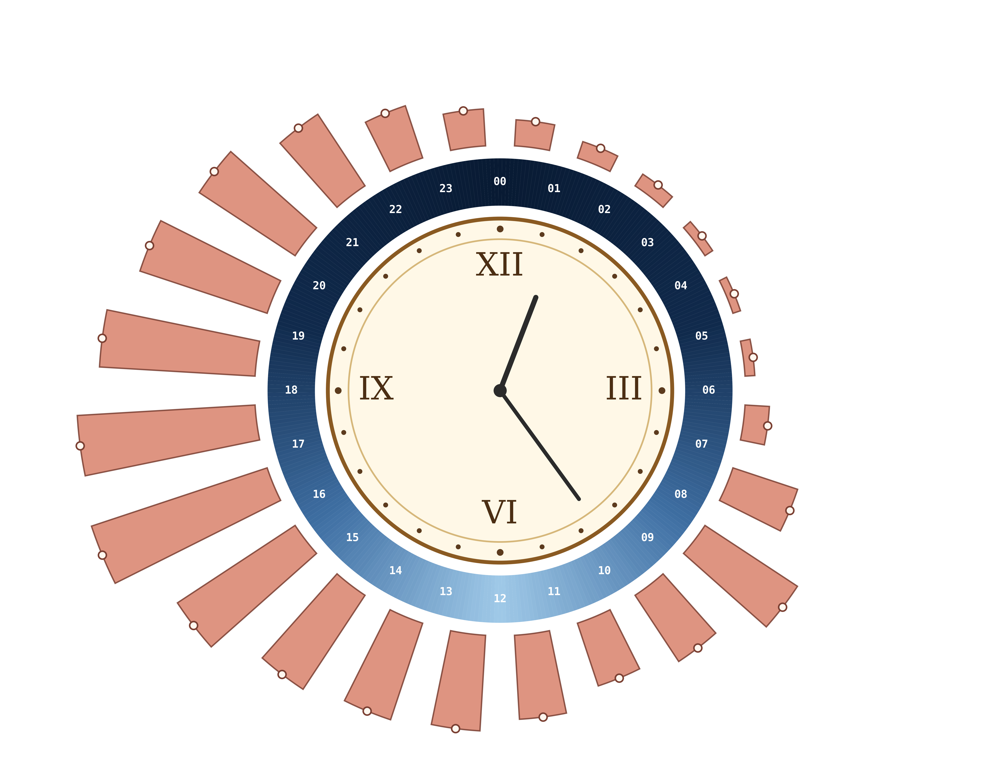

Average deparatures of bikes by hour in 2023 (April-October)
The following visualization shows the average number of bike departures throughout the day during the active cycling season in 2023. The data is displayed in a circular clock-based layout, where each bar represents the average number of departures within a one-hour interval.
The inner ring represents the 24-hour daily cycle, while the length of the bars indicates the relative intensity of bike usage. This makes recurring daily patterns, such as morning and afternoon peaks, easier to identify visually.
